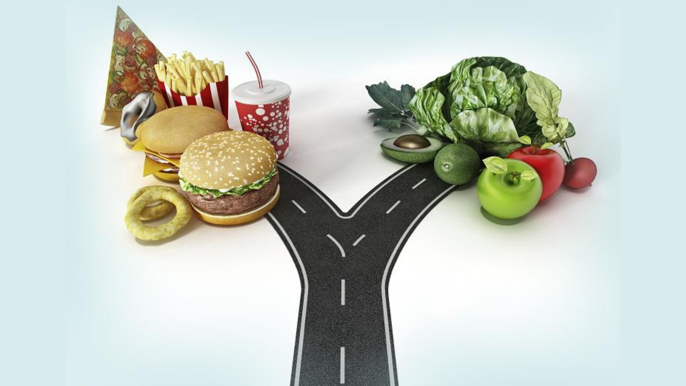

O que é considerado uma má alimentação

Para funcionar corretamente, o nosso corpo necessita de uma variedade de nutrientes. Os principais componentes de uma alimentação equilibrada são:
Carboidratos
Fornecem energia para as atividades diárias. Fontes saudáveis incluem grãos integrais, frutas e vegetais.
Proteínas
Essenciais para a construção e reparação de tecidos, além de desempenharem um papel importante no sistema imunológico. Fontes boas são carnes magras, peixes, ovos, leguminosas e produtos lácteos.
Gorduras
Necessárias para a absorção de vitaminas lipossolúveis (A, D, E e K), além de fornecerem energia. Opte por gorduras saudáveis, como aquelas encontradas em azeite de oliva, abacates e peixes gordos.
Vitaminas
Cruciais para processos metabólicos e funcionamento geral do corpo. As vitaminas podem ser obtidas através de uma dieta variada, incluindo frutas e vegetais.
Sais Minerais
Incluem cálcio, ferro, potássio, e magnésio, essenciais para funções como a saúde óssea, transporte de oxigênio e equilíbrio de fluidos. Fontes incluem vegetais verdes, nozes, sementes e carnes.
Fibras
Importantes para a saúde digestiva e para a regulação do açúcar no sangue. Encontradas em grãos integrais, frutas, vegetais e leguminosas.
Água
Vital para quase todas as funções corporais, incluindo regulação da temperatura e transporte de nutrientes. A hidratação adequada é essencial para a saúde geral.
Uma alimentação equilibrada deve incluir uma variedade desses nutrientes em quantidades adequadas para atender às necessidades individuais de energia e saúde. Por outro lado, uma má alimentação geralmente envolve o consumo excessivo ou insuficiente desses nutrientes e alimentos. A seguir, alguns outros aspectos que podem caracterizar uma má alimentação:
Excesso de Calorias
Consumo de calorias acima das necessidades diárias, o que pode levar ao ganho de peso e obesidade.
Alto Teor de Açúcares e Gorduras Saturadas
Dietas ricas em açúcares refinados e gorduras saturadas estão associadas a doenças como diabetes tipo 2 e problemas cardiovasculares.
Baixa Ingestão de Nutrientes Essenciais
Deficiências em vitaminas, minerais e fibras, que são importantes para a saúde geral, podem ocorrer se a dieta for pobre em frutas, vegetais e grãos integrais.
Alimentos Processados e Industrializados
Alta ingestão de alimentos processados e industrializados, que frequentemente contêm altos níveis de sódio, conservantes e outros aditivos prejudiciais.
Desbalanceamento Nutricional
Falta de variedade na dieta que resulta em desequilíbrios, como ingestão excessiva de um grupo alimentar e deficiência em outros.
Falta de Hidratação
A ingestão inadequada de água pode afetar várias funções corporais e a saúde geral.
Esses fatores podem contribuir para problemas de saúde a curto e longo prazo, por isso é importante manter uma dieta equilibrada e variada.